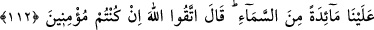

GÖKTEN SOFRA
İNDİRİLMESİ İSTEĞİ
112. Hani havârîler “Ey Meryem oğlu Îsâ, Rabbin bize gökten bir sofra indirebilir
mi?” demişlerdi. O, “Îman etmiş kimseler iseniz Allah’tan korkun!” cevabını
vermişti.
113. Onlar şöyle dediler: “ Ondan yemek istiyoruz ki, kalplerimiz mutmain olsun,
bize doğru söylediğini (kesin olarak) bilelim ve onun bizzat şâhitlerinden olalım.”
114. Meryem oğlu Îsâ şöyle dedi: Allah’ım, Rabbimiz! Bize gökten bir sofra indir
ki hem bizim hem de, geçmiş ve geleceklerimiz için bayram ve Sen’den bir âyet
(mûcize) olsun. Bizi rızıklandır, sen, rızık verenlerin en hayırlısısın!
115. Allah da şöyle buyurdu: Ben onu size şüphesiz indireceğim; ama bundan
sonra içinizden kim inkâr ederse, Ben ona kâinatta hiç kimseye etmediğim azâbı
ederim!
Hatırla “hani Havariler “Ey Meryem oğlu İsa, Rabb’in bize gökten bir sofra
indirebilir mi?” demişlerdi.” Bu soru, havarilerin daha Allah’ı hakkıyla
tanıyamadıkları ilk zamanlarda sorulmuştur. Onun için de edebe aykırı bir şekilde Îsâ
(a.s.)’a “Ey Allah’ın rasûlü” veya “Ey Allah’ın ruhu” dememişler, tutup ona ismiyle,
hem de annesine nisbet ederek hitap etmişlerdir. Eğer edebe riayet etmiş olsalardı, ona
“Ey Ruhulluh; yani Allah’ın ruhu” diyerek Allah’a nisbet ederlerdi.
Allah’a karşı da edeblice davranmamışlar ve O’nun dilediği şeyi, istediği şekilde
yaratmaya güç ve kudreti olduğundan şüphesi olan bir kimse gibi, “Rabbi’nin gücü
yeter mi?” diye soru sormuşlardır.
Bundan sonra da himmetlerinin düşüklüğünü, hedeflerinin basitliğini ve arzularının